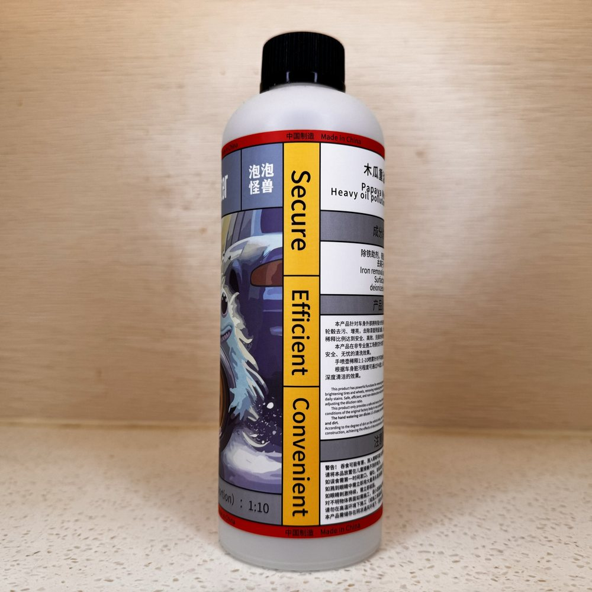

轮圈清洁剂
轮圈与煞车粉尘的重油污清洁剂。轮圈、行走机构、引擎室，还有漆面上的虫胶鸟粪都用得上。
加入购物车 → 填收件资料 → 用 WhatsApp 送出订单；每款能不能寄到你的国家、运费多少，小编会先在 WhatsApp 确认，再请你付款
产品说明
轮圈洗不干净、煞车粉尘卡一层黑、卡钳周围怎幺刷都灰灰的。这支是针对重油污与煞车粉尘的清洁剂，成分为除铁助剂、表面活性剂与去离子水。除了轮圈轮胎与行走机构，引擎室、车身上的虫胶鸟粪、漆面残留油脂也用得上。稀释倍率会随施工工具差到十倍，请依瓶身标示，或在 WhatsApp 向小编确认后再兑水。
规格
- 内容物
- 除铁助剂、表面活性剂、去离子水
- 适用材质
- 轮圈、轮胎与行走机构；引擎室；车身漆面上的虫胶、鸟粪与残留油脂
- 稀释比例
- 随施工工具不同差异很大，请依瓶身标示，或在 WhatsApp 向小编确认
- 搭配耗材
- 高压水枪（PA）、雾化喷壶、手动或电动泡沫壶、软刷
怎幺用
- 先确认你要用哪种工具施工（高压水枪、雾化喷壶、泡沫壶），不同工具的稀释倍率差到十倍，比例请依瓶身标示或问小编。
- 兑好水后均匀喷满目标区域，避开高温的煞车碟与引擎金属件。
- 静置：轮圈轮胎与行走机构 3～5 分钟；引擎室 5～8 分钟；车身虫胶鸟粪 3～5 分钟；漆面脱脂 2～3 分钟。
- 用软刷轻刷重污与缝隙，不需要大力擦拭，避免刮伤表面。
- 冲洗：一般部位用高压水枪，引擎室务必改用低压水枪。
- 施工完立刻彻底冲干净，不要让药剂干在工件上。
注意事项
- 本品的安全清洗效果，是创建在常温、没有太阳直晒、车身为原厂状态且未老化破损的前提下。
- 改装零件、电镀件、阳极氧化表面请极度谨慎，建议先在隐蔽处小范围测试没有异常再使用；如果一定要用，请加大稀释比例。
- 遇到不确定材质或老化的改装件，一律先在隐蔽区域做小范围兼容性测试。
- 严禁在高温烈日下施工，也不要让原液或稀释液长时间干在工件表面。
- 不要大力擦拭，避免刮伤基材表面。
- 不要喷到高温的煞车碟或引擎金属件；引擎室冲洗务必用低压水枪，不要用高压水枪直冲。
- 本品的 pH 值目前没有实测数据，本站不对酸碱性做保证；对酸碱敏感的表面请先测试再大面积施工。
- 目前没有混用兼容性数据，请不要和其他清洁剂或药剂混合使用。
- 施工建议戴手套、保持通风，避免接触眼睛与皮肤；不慎接触请以大量清水冲洗。
- 请存放在阴凉处、孩童接触不到的地方；不要把瓶子放在车上存放。
常见问题
电镀件、镀铬件、阳极氧化表面请先在隐蔽处小范围测试，确认没问题再整面施工，并缩短静置时间（1–2 分钟）、避免长时间接触。不确定材质请先在 WhatsApp 询问。
建议每 1–2 次洗车就做一次轮圈深层清洁，特别是常走山路或高速的车辆。煞车粉尘长期积累会腐蚀轮圈烤漆，早清早省力。
毛刷能把轮圈缝隙里的粉尘带出来，特别是 5 爪轮圈，清得比较彻底。但如果只是轻度日常清洁，喷覆静置后直接高压水冲也有不错效果。
施工教学
同类商品

轮圈清洁剂
确定要买就加入购物车，用 WhatsApp 送出订单；还不确定适不适合你的车，先在 WhatsApp 问清楚再下单。